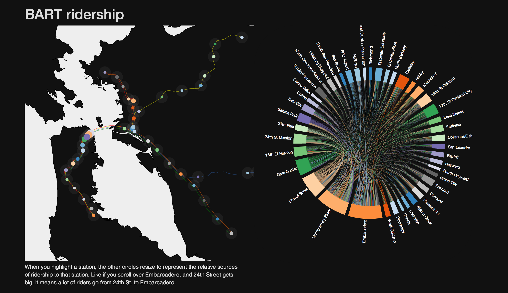

What is going on with BART?
In 2001, a strike was threatened, and BART employees received a
22 percent raise
over the four year period from 2001 to 2005.
In 2009, BART employees negotiated a contract that gave no raise for the following four years.
When an agreement wasn't reached July 1st,
2013 the BART unions held a 5 day strike immobilizing many in the Bay Area.
The strike only ended because the Governor instituted a 60 day cooling off period.
The major points of contention for the Unions are Pay raises, reduced employee contribution to pensions, medical benefits and safety.
Hyon asks: Are the demands reasonable?
Concerned that BART employees are the highest compensated government agency employees in the Bay Area, Hyon looks into the financial factors around BART employment including historical raises and inflation rates:

BART is Bending Us Over Backwards
Data Sources:
inflation
fare raises
revenue
Shirley asks what's behind "80k Average Salary"
Victor asks: How Much Do BART Employees Earn?
This visualization allows you explore each BART employee in terms of their costs of employment, such as base salary, overtime pay, health benefits, 401(k), and pension contributions.
Data Sources: salaries
Jon Slices the Salary data
Several ways of breaking down salaries for management and non-management BART employeesData Sources: salaries
Lewis takes a look at Bart Ridership
Click thru to an interactive look at who rides where.
Data Source: ridership
Ian takes a look at Highway Traffic during the July strike
With help from Lewis Lehe and JeanWho made all this?
We are the Bay Area d3 User Group.
d3.js is a powerful JavaScript library for building data visualizations and we get together to talk about it and build things with it.
We co-hosted 2 events
with the VUDLab @ UC Berkeley to work on this project.
10/02/2013 - hack the BART strike
10/07/2013 - hack the BART strike round 2
The VUDLab is all about visualizing urban data and brought a lot of transportation expertise.
Special thanks to Halftone for helping design and build this website.
Special thanks to our videographer Matt who does a great job
filming our meetups.
Data Sources
A lot of work went into collecting the data used in the above projects.
The project started when Ian asked
EJ,
Paul and
Erik
to help him find data about the BART after the strike in July.
After building up a repository and several visualization prototypes we decided to get the d3 meetup involved.
At the hackathons lots more data
came in!
- Antony matched up salary data to union representation and job families
- James and Ben got cost of living data together.
- Jon combined the monthly ridership files into one master file
- Lewis collected PEMS traffic data as well as currating BART station and map data
- We also got a ton of hard to find links to public/open data from a furloughed government employee who needs to remain anonymous but deserves to be thanked!